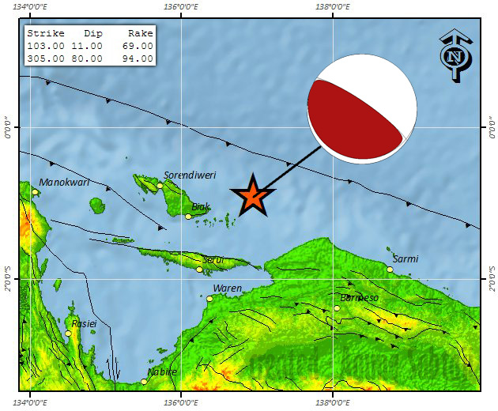

Tsunami Biak 1996

| Lokasi & Koordinat Bencana | : Pulau Biak, Papua Timur (1°8’8,113” S, 136°2’33,723” E) |
Waktu & Tanggal Kejadian Bencana |
: 5.59 UTC. 17 Februari 1996 |
| Penyebab | :gempa magnitudo 8,1 dengan episenter sedalam 33 km serta dua gempa susulan dengan magnitude 6,5 dengan kedalaman 19 km dan GMT dan magnitudo 6,4 dengan kedalaman 32 km |
| Kecepatan Gelombang | : Tidak ditemukan |
| Ketinggian Gelombang | :7 Meter |
| Jumlah Korban Meninggal | : 108 orang. |
| Jumlah Korban Luka-luka | :423 orang |
| Jumlah Korban Hilang | : 58 orang |
| Kerugian | : 5.043 rumah hancur atau rusak . |
Referensi
Kompas (2020). “Hari ini dalam sejarah: Gempa dan Tsunami Terjang Irian Jaya. 108 orang Meninggal” diakses dari https://www.kompas.com/tren/read/2021/02/17/093000865/hari-ini-dalam-sejarah--gempa-dan-tsunami-terjang-irian-jaya-108-orang pada 23 Juni 2021